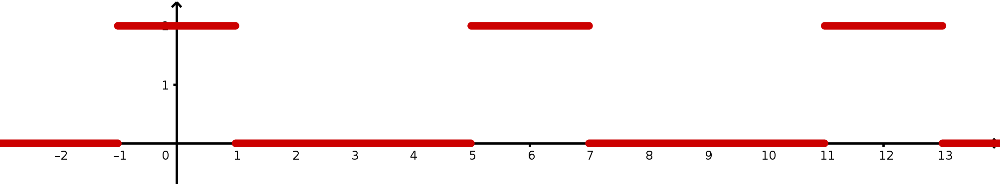

Signaux à tracer :
Tracer, ci-dessous, sur au moins deux périodes, les signaux dont les caractéristiques sont données ci-après :
- \(h\) est un signal impair et \(4\)-périodique défini sur \(\left[ 0; 2 \right]\) par
\(h(t)=\left|\begin{array}{l} 0 \textrm{ sur } \left[ 0 ; 1 \right[ \\
-1 \textrm{ sur } \left[ 1 ; 2\right] \\
\end{array} \right.\)
- \(u\) est un signal pair et \(4\)-périodique défini sur \(\left[ 0; 2 \right]\) par \(u(t)=\left|\begin{array}{l} t \textrm{ sur } \left[ 0 ; 1 \right[ \\
2-t \textrm{ sur } \left[ 1 ; 2\right] \\
\end{array} \right.\)
On considère la fonction \(f\), périodique de période \(T\), dont une représentation graphique est donnée par la figure ci-dessous :

- Déterminer la période \(T\) de la fonction \(f\).
- Déterminer la valeur moyenne \(a_0\) de la fonction \(f\).
- Pour tout entier \(n\geq1\), on a \(b_n=0\).
Justifier cette affirmation.
- Pour tout entier \(n\geq1\), on a \(a_n=\dfrac{4}{T}\displaystyle\int_0^\frac{T}{2}\,f(t)\cos(n\omega t)\,\textrm{d}t\).
Démontrer, en calculant, que pour tout \(n\geq1\), on a :
\(a_n=\dfrac{4\sin\left(\dfrac{\pi}{3}n\right)}{\pi n}\)
En prévision d'une élection entre deux candidats A et B, un institut de sondage recueille les intentions de vote de futurs électeurs.
Parmi les 1200 personnes qui ont répondu au sondage, 47% affirment vouloir voter pour le candidat A et les autres pour le candidat B.
Compte-tenu du profil des candidats, l'institut de sondage estime que 10% des personnes
déclarant vouloir voter pour le candidat A ne disent pas la vérité et votent en réalité pour
le candidat B, tandis que 20% des personnes déclarant vouloir voter pour le candidat B ne
disent pas la vérité et votent en réalité pour le candidat A.
On choisit au hasard une personne ayant répondu au sondage et on note :
- A l'événement «La personne interrogée affirme vouloir voter pour le candidat A» ;
- B l'événement «La personne interrogée affirme vouloir voter pour le candidat B» ;
- V l'événement «La personne interrogée dit la vérité».